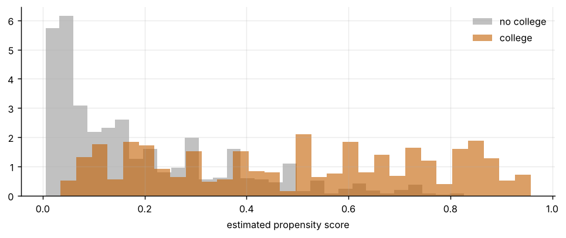
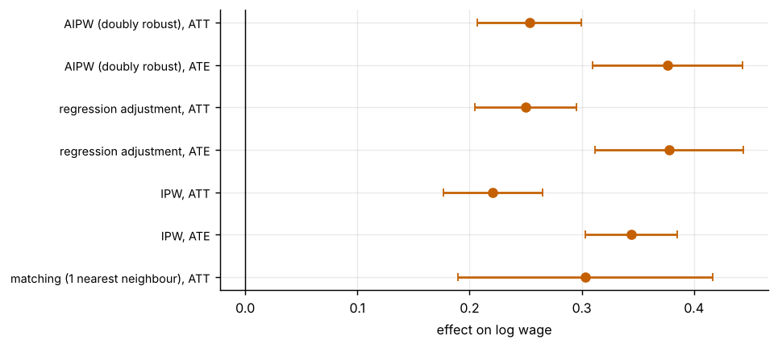

Step 1The question and the assumptions
Do men with a college degree earn more than otherwise similar men without one? The data come from Card's (1995) wage sample. The outcome is the log wage (lwage) and the treatment is \(D_i=1\) if the man has 16 or more years of schooling. Education is chosen, not assigned, so a raw comparison mixes the effect of college with who goes to college.
Matching, weighting and doubly robust methods all rest on two assumptions:
- Unconfoundedness: \((Y_i(0),Y_i(1))\perp D_i\mid X_i\). Nothing unobserved drives both selection and wages once \(X_i\) is held fixed. This cannot be tested.
- Overlap: \(0<e(X_i)<1\), where \(e(x)=\Pr(D_i=1\mid X_i=x)\) is the propensity score. Treated men must have untreated counterparts and the reverse. This can be checked.
| Symbol | Variable | Definition |
|---|---|---|
| \(Y_i\) | lwage |
log wage |
| \(D_i\) | college |
1 if educ ≥ 16 |
| \(X_i\) | black, smsa, south, married, exper |
race, city residence, region, marital status, experience (and its square) |
We leave out nearc4 (living near a four-year college), which is the instrument of the IV guide and is not a confounder to adjust for here.
Before you estimate anything
Write down why the covariates should be enough: which variables drive the choice of college and also wages, and which of them you do not observe (ability, family background). Never condition on variables affected by the treatment, such as occupation. Decide whether you want the effect on the treated (ATT) or on the whole population (ATE) before choosing the estimator.
How to write it: design
We estimate the effect of a college degree on log wages under selection on observables, conditioning on race, region, city residence, marital status and a quadratic in experience. We estimate the propensity score with a logit, check overlap and balance, and compare nearest-neighbour matching, inverse-probability weighting, regression adjustment and augmented inverse-probability weighting. Standard errors are bootstrapped with the propensity score re-estimated in every draw. We assess an omitted confounder with the robustness value of Cinelli and Hazlett (2020).
Step 2Data, raw difference and the propensity score
import warnings; warnings.filterwarnings("ignore")
import numpy as np, pandas as pd, statsmodels.api as sm
import matplotlib.pyplot as plt
d = pd.read_csv("card.csv").dropna()
d["college"] = (d.educ >= 16).astype(int); d["exper2"] = d.exper ** 2 / 100
X = ["black", "smsa", "south", "married", "exper", "exper2"]
y = d.lwage.values; D = d.college.values; Xm = d[X].values
print(f"{len(d):,} men; {D.sum()} with a college degree ({D.mean():.1%})")
print(f"Raw difference in mean log wage: {y[D == 1].mean() - y[D == 0].mean():.3f}")
def pscore(Xm, D):
m = sm.Logit(D, sm.add_constant(Xm)).fit(disp=0)
return m.predict(sm.add_constant(Xm)), m
e, lg = pscore(Xm, D)
print(f"Propensity score: treated mean {e[D == 1].mean():.3f}, untreated mean {e[D == 0].mean():.3f}; range {e.min():.3f} to {e.max():.3f}")
tb = lg.summary2().tables[1][["Coef.", "Std.Err."]].round(3); tb.index = ["const"] + X; print(tb.to_string())
fig, ax = plt.subplots(figsize=(7.5, 3.2))
ax.hist(e[D == 0], bins=30, alpha=.6, color="#999", density=True, label="no college"); ax.hist(e[D == 1], bins=30, alpha=.6, color="#c46000", density=True, label="college")
ax.set_xlabel("estimated propensity score"); ax.legend(frameon=False); plt.tight_layout()3,003 men; 816 with a college degree (27.2%)
Raw difference in mean log wage: 0.229
Propensity score: treated mean 0.496, untreated mean 0.188; range 0.005 to 0.958
Coef. Std.Err.
const 3.191 0.290
black -1.050 0.148
smsa 0.307 0.118
south -0.141 0.109
married -0.073 0.024
exper -0.670 0.063
exper2 1.625 0.363
How to read it
27% of the men have a college degree. The average propensity score is 0.50 for graduates and 0.19 for non-graduates, so the covariates predict selection strongly. The logit shows that Black men, men in the South and men with more experience are less likely to hold a degree. Experience is the strongest predictor because it is mechanically linked to schooling: men who study longer enter the labour market later. The scores run from 0.005 to 0.958.
Step 3Overlap and covariate balance
def smd(x, D, w=None):
w = np.ones(len(x)) if w is None else w
m1 = np.average(x[D == 1], weights=w[D == 1]); m0 = np.average(x[D == 0], weights=w[D == 0])
return (m1 - m0) / np.sqrt((x[D == 1].var(ddof=1) + x[D == 0].var(ddof=1)) / 2)
w_att = np.where(D == 1, 1.0, e / (1 - e)) # ATT weights: reweight the untreated to look treated
rows = {c: (smd(d[c].values, D), smd(d[c].values, D, w_att)) for c in X}
bal = pd.DataFrame(rows, index=["raw", "after weighting"]).T
print("Standardised mean differences (|value| < 0.1 is the usual threshold):")
print(bal.round(3).to_string())
print(f"\nShare of untreated men with propensity score below the smallest treated value: {(e[D == 0] < e[D == 1].min()).mean():.1%}")
print(f"Largest ATT weight: {w_att[D == 0].max():.2f}; effective number of untreated men: {w_att[D == 0].sum() ** 2 / (w_att[D == 0] ** 2).sum():.0f} of {(D == 0).sum()}")
print(f"Treated men with score above 0.9: {(e[D == 1] > .9).sum()}; untreated above 0.9: {(e[D == 0] > .9).sum()}")Standardised mean differences (|value| < 0.1 is the usual threshold):
raw after weighting
black -0.474 0.003
smsa 0.226 -0.016
south -0.243 -0.008
married 0.153 0.081
exper -1.282 -0.191
exper2 -1.122 -0.083
Share of untreated men with propensity score below the smallest treated value: 16.1%
Largest ATT weight: 4.77; effective number of untreated men: 647 of 2187
Treated men with score above 0.9: 31; untreated above 0.9: 0How to read it
Before adjustment the groups are far apart (standardised difference −1.28 for experience, −0.47 for race). After ATT weighting every covariate is within 0.1 except experience (−0.19), so the balance is good but not perfect and you should say so. Overlap is the weak point: 16% of non-graduates have a score below the lowest graduate score, 31 graduates have scores above 0.9 and no non-graduate does. ATT weights are moderate (maximum 4.8), but the effective number of controls falls from 2,187 to 647.
Step 4Four estimators
def estimators(d, X, ps_trim=None):
y = d.lwage.values; D = d.college.values; Xm = d[X].values
e, _ = pscore(Xm, D)
keep = np.ones(len(d), bool) if ps_trim is None else (e > ps_trim) & (e < 1 - ps_trim)
y, D, Xm, e = y[keep], D[keep], Xm[keep], e[keep]
out = {}
# 1. nearest-neighbour matching on the propensity score (with replacement), ATT
t = np.where(D == 1)[0]; c = np.where(D == 0)[0]
ec = e[c]; idx = np.abs(e[t][:, None] - ec[None, :]).argmin(1)
out["matching (1 nearest neighbour), ATT"] = (y[t] - y[c][idx]).mean()
# 2. inverse-probability weighting (normalised weights), ATE and ATT
w1 = D / e; w0 = (1 - D) / (1 - e)
out["IPW, ATE"] = (w1 * y).sum() / w1.sum() - (w0 * y).sum() / w0.sum()
wa = np.where(D == 1, 1.0, e / (1 - e))
out["IPW, ATT"] = y[D == 1].mean() - np.average(y[D == 0], weights=wa[D == 0])
# 3. regression adjustment with separate outcome regressions for each group
Z = sm.add_constant(Xm)
m1 = sm.OLS(y[D == 1], Z[D == 1]).fit(); m0 = sm.OLS(y[D == 0], Z[D == 0]).fit()
mu1, mu0 = m1.predict(Z), m0.predict(Z)
out["regression adjustment, ATE"] = (mu1 - mu0).mean()
out["regression adjustment, ATT"] = (y[D == 1] - mu0[D == 1]).mean()
# 4. augmented IPW (doubly robust)
psi = mu1 - mu0 + D * (y - mu1) / e - (1 - D) * (y - mu0) / (1 - e)
out["AIPW (doubly robust), ATE"] = psi.mean()
out["AIPW (doubly robust), ATT"] = (D * (y - mu0) - (1 - D) * e / (1 - e) * (y - mu0)).sum() / D.sum()
return out
est = estimators(d, X)
rng = np.random.default_rng(3); B = 300
boot = pd.DataFrame([estimators(d.sample(len(d), replace=True, random_state=int(rng.integers(1e9))), X) for _ in range(B)])
res = pd.DataFrame({"estimate": pd.Series(est), "bootstrap s.e.": boot.std(ddof=1)})
res["95% CI low"] = res.estimate - 1.96 * res["bootstrap s.e."]; res["95% CI high"] = res.estimate + 1.96 * res["bootstrap s.e."]
print(f"Raw difference: {y[D == 1].mean() - y[D == 0].mean():.3f}\n")
print(res.round(3).to_string())
fig, ax = plt.subplots(figsize=(7.5, 3.4))
ax.errorbar(res.estimate, range(len(res)), xerr=1.96 * res["bootstrap s.e."], fmt="o", color="#c46000", capsize=3)
ax.set_yticks(range(len(res))); ax.set_yticklabels(res.index, fontsize=8); ax.axvline(0, color="#000", lw=.8); ax.set_xlabel("effect on log wage"); plt.tight_layout()Raw difference: 0.229
estimate bootstrap s.e. 95% CI low 95% CI high
matching (1 nearest neighbour), ATT 0.303 0.058 0.190 0.417
IPW, ATE 0.344 0.021 0.303 0.385
IPW, ATT 0.221 0.023 0.176 0.265
regression adjustment, ATE 0.378 0.034 0.312 0.444
regression adjustment, ATT 0.250 0.023 0.205 0.295
AIPW (doubly robust), ATE 0.376 0.034 0.310 0.443
AIPW (doubly robust), ATT 0.253 0.024 0.207 0.300
How to read it
The raw gap is 0.23 log points. Adjusting raises the estimate, because graduates are younger and less experienced. For the ATT, IPW gives 0.22, regression adjustment 0.25, AIPW 0.25 and one-nearest-neighbour matching 0.30 (a much wider interval, ±0.11, because it uses few controls). For the ATE the estimates are 0.34 (IPW), 0.38 (regression adjustment) and 0.38 (AIPW). The doubly robust and regression estimates agree, which is reassuring, and the ATE exceeds the ATT because graduates are not a random sample: the model implies a larger gain for those who are less likely to attend. The ATT estimates are therefore not comparable with the ATE.
Step 5Robustness: trimming, specification and an omitted confounder
rows = []
for tr in [None, .02, .05, .10]:
o = estimators(d, X, tr)
rows.append((f"trim propensity score outside [{tr}, {1 - tr}]" if tr else "no trimming", o["IPW, ATE"], o["AIPW (doubly robust), ATE"], o["matching (1 nearest neighbour), ATT"]))
print(pd.DataFrame(rows, columns=["sample", "IPW ATE", "AIPW ATE", "matching ATT"]).round(3).to_string(index=False))
X_small = ["black", "smsa", "south"]
o2 = estimators(d, X_small)
print(f"\nWith fewer controls (race, city, region only): IPW ATE {o2['IPW, ATE']:.3f}, AIPW ATE {o2['AIPW (doubly robust), ATE']:.3f}")
# omitted confounder: robustness value of Cinelli and Hazlett (2020) from the regression with the treatment and all covariates
ols = sm.OLS(y, sm.add_constant(np.column_stack([D, Xm]))).fit()
tstat = ols.tvalues[1]; dof = ols.df_resid; f = abs(tstat) / np.sqrt(dof)
rv = .5 * (np.sqrt(f ** 4 + 4 * f ** 2) - f ** 2)
print(f"\nRegression estimate {ols.params[1]:.3f} (t = {tstat:.1f}). Robustness value: {rv:.1%}")
print("An omitted confounder would need to explain at least this share of the residual variance of BOTH college and log wages to reduce the estimate to zero.")
r2y = {c: 1 - ((sm.OLS(y, sm.add_constant(np.column_stack([D, Xm]))).fit().ssr) / (sm.OLS(y, sm.add_constant(np.column_stack([D, d[[v for v in X if v != c]].values]))).fit().ssr)) for c in X}
print("For reference, the share of residual wage variance explained by each observed covariate:", {k: f"{v:.1%}" for k, v in r2y.items()}) sample IPW ATE AIPW ATE matching ATT
no trimming 0.344 0.376 0.303
trim propensity score outside [0.02, 0.98] 0.324 0.345 0.303
trim propensity score outside [0.05, 0.95] 0.315 0.299 0.306
trim propensity score outside [0.1, 0.9] 0.304 0.275 0.322
With fewer controls (race, city, region only): IPW ATE 0.180, AIPW ATE 0.177
Regression estimate 0.291 (t = 15.7). Robustness value: 24.9%
An omitted confounder would need to explain at least this share of the residual variance of BOTH college and log wages to reduce the estimate to zero.
For reference, the share of residual wage variance explained by each observed covariate: {'black': '4.1%', 'smsa': '5.1%', 'south': '3.0%', 'married': '3.4%', 'exper': '4.3%', 'exper2': '3.0%'}How to read it
Trimming matters for the ATE: it falls from 0.38 (AIPW, no trimming) to 0.28 once scores outside [0.1, 0.9] are dropped, which shows that the ATE leans on the extreme-score men for whom overlap is poor. The matching ATT is stable at 0.30–0.32. Controlling only for race, city and region gives an ATE of 0.18, about half, so the result depends on adjusting for experience, as expected. The robustness value is 24.9%: an omitted confounder would have to explain about a quarter of the residual variance of both college attendance and wages to wipe out the regression estimate, and none of the observed covariates explains more than 5.1% of wage variance. That is a strong requirement, but ability and family background are exactly the type of omitted variable that could matter, so it is a bound, not proof.
How to write it: results
Conditioning on race, region, city residence, marital status and experience, a college degree is associated with about 0.38 log points higher wages for the population (AIPW ATE; 95% CI 0.31 to 0.44) and 0.25 for graduates (ATT; 0.21 to 0.30), against a raw gap of 0.23. The ATT estimates range from 0.22 to 0.30 across IPW, regression adjustment, AIPW and matching, and the ATE falls to 0.28 when scores outside [0.1, 0.9] are trimmed, because overlap is weak at the extremes. Weighting balances all covariates within 0.1 standard deviations except experience (0.19). An omitted confounder would have to explain about 25% of the residual variance of both schooling and wages to explain away the estimate. These estimates rest on unconfoundedness and should be read as conditional associations unless that assumption is credible.
Step 6What to report in the paper
| Item | What to show |
|---|---|
| Estimand | ATE or ATT, and why |
| Selection model | the covariates and the reason for each |
| Overlap | the propensity-score histograms, the share trimmed |
| Balance | standardised differences before and after adjustment |
| Estimates | matching, IPW, regression adjustment and AIPW side by side, with bootstrap intervals |
| Sensitivity | trimming, specification and a bound on an omitted confounder |
Common mistakes
- Treating balance on observables as proof of unconfoundedness. Balance is necessary, not sufficient. Unobserved ability can still bias the estimate.
- Conditioning on post-treatment variables. Occupation or industry is affected by college and would absorb part of the effect.
- Ignoring overlap. Extreme weights make IPW unstable. Show the weights and trim openly.
- Standard errors that ignore the first step. Re-estimate the propensity score in every bootstrap draw.
- Mixing estimands. ATE and ATT differ when effects vary. Do not compare them as if they were one number.
- Treating matching as magic. It is a way to adjust for observed covariates, not a way to remove selection on unobservables. Use an IV or a design if unconfoundedness is not plausible.